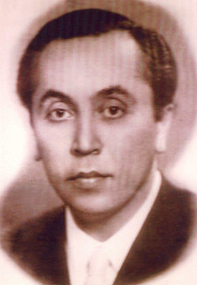

Namýk Gedik (1911-1960)

Demokrat Parti iktidarý boyunca öne çýkan isimlerden biri olmuþtur. Asýl mesleði doktorluk olup 1950 yýlýndan itibaren ölümüne kadar siyasette kalmýþ, birkaç kez Adnan Menderes tarafýndan bakanlýða getirilmiþtir. Özellikle son Ýçiþleri Bakanlýðý döneminde sergilediði tutum ve uygulamalarý dindar kesimi rahatsýz etmiþ ve þikâyetlere konu olmuþtur. Bediüzzaman Hazretleri, çok aðýr hasta olmasýna raðmen Urfa’da kalmasýna izin verilmemesi ve bu þehirden çýkarýlmaya çalýþýlmasý, Namýk Gedik’e karþý rahatsýzlýklarý daha da arttýrmýþtýr. 27 Mayýs darbesinden sonra tutuklanmýþtýr.Namýk Gedik 1911 yýlýnda Ýstanbul’da doðdu. Ýlk ve orta öðrenimini tamamladýktan sonra týp fakültesine girdi. Daha sonra dahiliye uzmaný olarak eðitimini tamamladý. Doktor olarak çalýþmaya baþladý. Baþhekimlik yaptý. Yurtta baþlattýðý çalýþmasýný devam ettirdi ve daha sonra görevli olarak Çin’e gönderildi.
Gedik’in, Çin’de bulunduðu sýrada ülkemizde çok partili hayata geçiþin önemli bir adýmý daha gerçekleþmekteydi. Yapýlan ilk seçim þaibeli olmuþ, gizli oy verme yerine açýk oy, açýk sayým yerine gizli sayýmla bir seçim gerçekleþmiþ ve bir süre daha CHP iktidarý devam etmiþti.
Dünyada meydana gelen geliþmeler, ülkemizde iktidarý elinde bulunduranlarý da bazý deðiþiklikleri yapmaya zorlamýþ ve 1950’de yeni bir seçimin arefesine gelinmiþti. Ýþte yapýlacak bu seçimde, Çin’de görevini sürdürmekte olan Namýk Gedik de aday gösterildi. 14 Mayýs 1950 seçimleri Demokrat Partinin ezici bir çoðunlukla seçimi kazanmasý yeni bir dönemi baþlatmýþtý. Bu partiden aday gösterilen Namýk Gedik de Aydýn’dan milletvekili seçilerek Meclise girme þansýný elde etmiþti.
1950 yýlýndan itibaren aktif siyasete girip vekil seçilen Namýk Gedik, Demokrat Partinin on yýllýk iktidarý boyunca birkaç kez bakan olarak hükümette yer aldý. Muhalefetin en çok eleþtiri alan bakanlarýndan biri oldu. Ayrýca, Ýçiþleri Bakaný olarak görev yaptýðý son bakanlýðý döneminde icra edilen uygulamalar hem kendisi, hem de Demokrat Parti için ciddî rahatsýzlýklara sebep oldu.
Namýk Gedik, Risâle-i Nur’da ismi zikredilen siyaset ve devlet adamlarýmýzdan biridir. Özellikle Ezan-ý Muhammedî’nin aslýna çevrilmesi ve insanî deðerlerin eskiye oranla daha çok ön planda tutulmasý, vb. müsbet geliþmelere imza atan Demokrat Parti’nin icraatlarý Bediüzzaman Hazretleri tarafýndan övgüyle karþýlandý. Deðiþik vesilelerle tebrik ve iltifatlarda bulundu:
“Ankara’ya bu defa geldiðimin mühim bir sebebi, Ýslâmiyete ciddî taraftar Dahiliye Vekili Namýk Gedik’i görmek ve Ýslâmiyet’in kahramaný olan Adnan Beye ve Tevfik Ýleri gibi mühim zatlara bir hakikatý söylemektir ki: Hem Demokrat’a ezan-ý Muhammedî gibi çok kuvvet vermek ve Risale-i Nur’un neþrine müsaadesi gibi çok taraftar olmak ve âlem-i Ýslâmý, hattâ bir kýsým Hýristiyan devletlerini de memnun etmek için, Ayasofya’yý muzahrafattan temizleyip ibadet mahallî yapmaktýr. Bu ise, bu mesele için otuz sene siyaseti terk ettiðim halde, bu nokta hatýrý için Namýk Gedik’i görmek istedim ve geldim. Adnan Bey, Namýk Gedik ve Tevfik Ýleri gibi zatlarýn hatýrý için baþka yere gitmedim…” (Emirdað Lâhikasý, 1994, s. 449)
Demokrat Parti, iktidarýnýn son yýlýnda ciddî sýkýntýlar yaþadý. Ýçiþleri Bakaný olan Namýk Gedik de bu sýkýntýlardan nasibini almaktaydý. Bu arada Bediüzzaman’ýn son günlerinde Urfa’yý tercih etmesi ve buraya gelmesi, sonrasýnda Ýçiþleri Bakaný’nýn sergilediði tutum ciddi eleþtirilere sebep oldu. Vefatýndan bir iki gün önce Urfa’ya gelen Bediüzzaman hastalýðýndan ötürü yerinden kalkacak durumda deðildi. Buna raðmen baþta vali ve emniyet amirlerinin kendisini þehirden çýkarmak için gösterdikleri çaba çok sert tepkilere sebep oldu. Tepkilere muhatap olan vali emrin içiþleri bakanlýðýndan geldiðini bildirince bu sefer de dikkatler bakana yöneldi.
Urfa’dan Ankara’ya çok sayýda telgraf yaðmakta idi. Ankara’daki söz konusu geliþmeleri hatýralarýnda aktaran dönemin Demokrat Parti milletvekillerinden Gýyaseddin Emre, bizzat bakanla tartýþtýðýný ve sergilediði tutumun yanlýþlýðýný ilettiðini belirtmektedir. Gerek CHP’nin sert muhalefeti, gerek basýnýn koparttýðý yaygaralar Bakaný son derece ürkütmekte ve yanlýþ eylemlere sürüklemekteydi. Diðer taraftan darbe söylentilerinin giderek artmasý, bu söylentilerin bizzat Bakana da iletilmesi kendisini daha da tedirgin etmekte idi. Gýyaseddin Emre, Bakanýn kendisine söylediklerini þu sözlerle aktarmaktadýr:
“…’çok kalabalýk olacak. Hâdiseler olacak. Görmüyor musun, Halk Partisi mensuplarýnýn yaptýklarýný?” Emre, bu görüþmeden sonra Bakanla arasýnýn açýldýðýný da sözlerine eklemekte, ayrýca; “Tevfik Ýleri, Müslüman, mütedeyyin bir zattý... Namýk Gedik, mutekid, ama ihmalkâr...” tesbitini de yapmaktadýr. Emre, “Tevfik Ýleri, ‘Gel seni bir zatýn ziyaretine götüreyim.’ diyor Namýk Gedik’e. Tevfik Ýleri’nin gayesi; Gedik’in, Üstadý görmesi. Çünkü onu görüp de kalbine Ýslâmî bir his gelmemesi mümkün deðil. Yani ben tahmin ediyorum ki, kilisedeki bir papaz gelip onu görse idi, belki Müslüman olurdu.” (Son Þahitler, 3. C., s. 279)
Bediüzzaman Hazretlerinin baþta Adnan Menderes olmak üzere parti yöneticilerine hitaben yazmýþ bulunduðu mektuplar, Yassýada kayýtlarýnýn incelemeye açýlmasý ile birlikte, yeniden gündeme geldi. Çünkü Yassýada evraklarý arasýnda Bediüzzaman Hazretlerine ait mektuplar da çýktý. Demokrat Parti’nin icraatlarýný müteaddit defalar öven Bediüzzaman, son zamanlarda kendisi ve talebelerine yönelik uygulamalarýndan dolayý Ýçiþleri Bakaný Gedik’ten þikâyetçi olmuþtur. Çünkü, kendisine ev hapsi dahil büyük sýkýntýlar yaþatýlmýþtýr. 12 Ocak 1960 tarihi taþýyan mektupta þu ifadelere yer verilmiþtir:
“Bütün muhalifler ve siyasiler her yerde ve her tarafta serbest olarak gezerlerken Ankara’dan gelen bir emirle, ‘Þimdi evinden dahi çýkmayacaksýn.’ denilmesi bir haps-i münferit hükmündedir. Otuz senelik muhaliflerin yaptýðý istibdat lehine bu vaziyet çok aðýr geliyor…”
Bu mektup bizzat Baþbakan’a Mustafa Sungur aracýlýðýyla iletilmiþtir.
Bilindiði gibi 23 Mart 1960 tarihinde Bediüzzaman Hazretleri vefat etmiþtir. Çok kýsa bir süre sonra da 27 Mayýs darbesi gerçekleþti. Aralarýnda Namýk Gedik de olmak üzere çok sayýda siyasetçi tutuklandý. Birçoðu onur kýrýcý uygulamalara maruz kaldý. Bu uygulamalardan nasibini alanlardan birisi de Namýk Gedik idi. Tutuklandýktan sonra birkaç gün Harp Okulu’nda tutuldu. 30 Mayýs’ta yapýlan açýklamada, okulun penceresinden atlamak suretiyle intihar ettiði iddia edildi. Ancak bu iddianýn doðruluðu hâlâ tartýþma konusu olmaya devam etmektedir. Genel kanaat darbeciler tarafýndan öldürüldüðü þeklindedir.